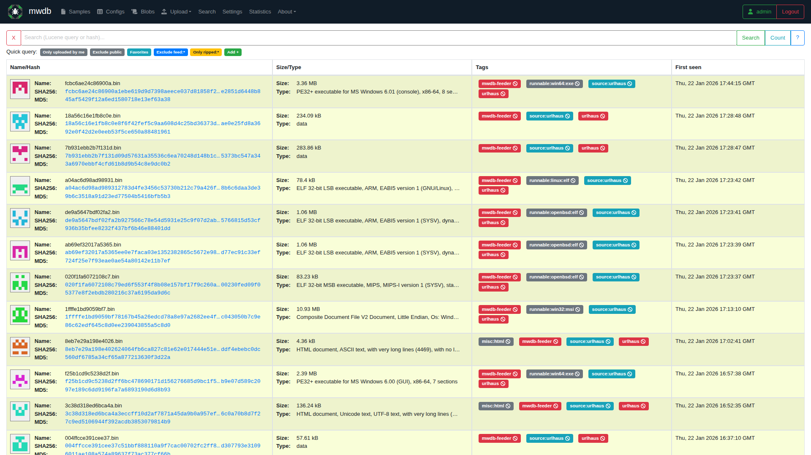
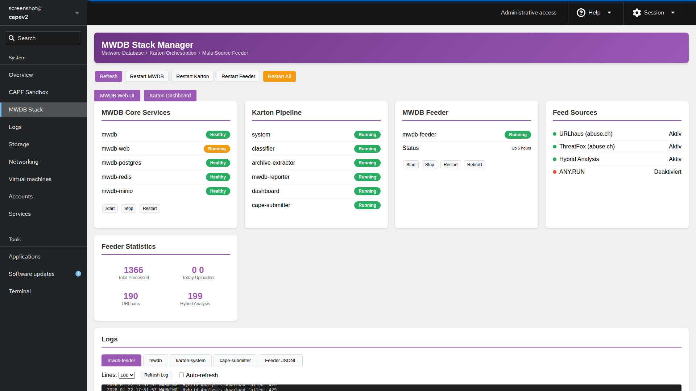
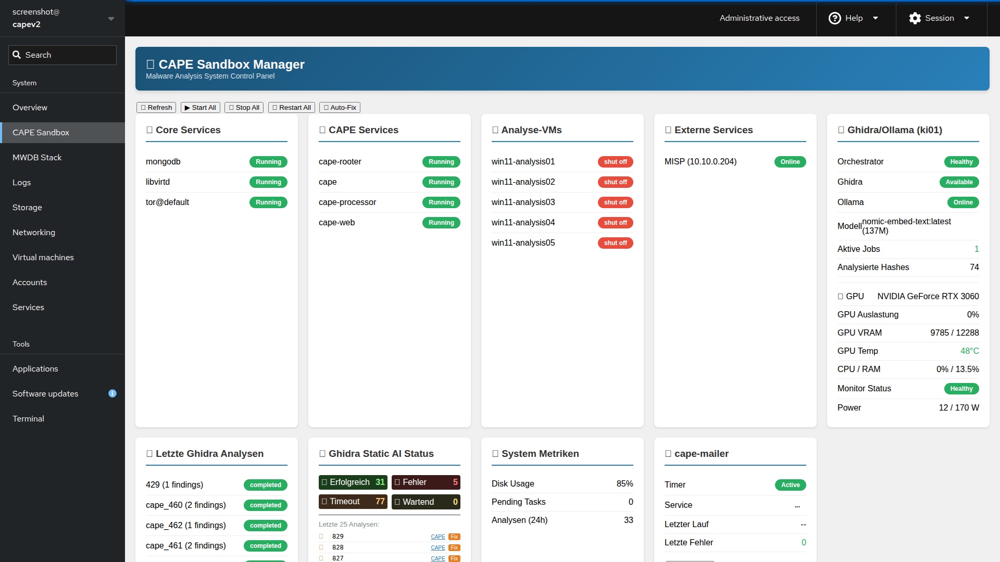

Modularer, unternehmenstauglicher Malware-Analyse- und Threat-Intelligence-Stack: dynamisches Sandboxing, statische Reverse-Engineering-Pipeline, Threat-Intel-Feeds und LLM-gestützte Analyse in einem durchgängigen Workflow.
MIT License · Malware-Analyse & Threat IntelligenceIcePorge orchestriert mehrere spezialisierte Sub-Repositories zu einer durchgängigen Malware-Analyse-Pipeline: Bedrohungsdaten werden aus öffentlichen Threat-Intel-Feeds eingesammelt, automatisiert an eine Sandbox zur dynamischen Verhaltensanalyse übergeben, in einem zentralen Malware-Repository verwaltet und optional per Ghidra headless dekompiliert sowie durch ein LLM-gestütztes RAG-System angereichert. Ein integriertes Web-Dashboard bündelt Phishing-Report-Auswertung und System-Monitoring über die gesamte Kette.
Automatisierter Import aus URLhaus, ThreatFox, MalwareBazaar, Hybrid Analysis und Ransomware.live als kontinuierliche Sample- und IOC-Quelle.
CAPE Sandbox für Verhaltensanalyse und Config-Extraktion, automatisierte Einreichung per Tag-Routing und Vorfilterung, IOC-Export nach MISP.
Ghidra Headless für automatisierte Dekompilierung, ergänzt durch LLM-Unterstützung (lokal via Ollama oder Cloud via AWS Bedrock) und eine RAG-Pipeline mit Vektorsuche.
Zentrale Oberfläche für Phishing-Reports (SMTP-Header, SPF/DKIM/DMARC, Routing-Kette), CAPE-Analysenübersicht und System-Health-Status.
Threat-Intelligence-Feeds werden von zwei Aggregatoren eingesammelt und in die Analyse-Plattform eingespeist. Dort orchestriert Karton den Fluss zwischen dem zentralen Malware-Repository (MWDB) und der CAPE Sandbox; Ergebnisse fließen automatisch in MISP und in die Phishing-Mail-Analyse. Eine separate, GPU-gestützte KI-Ebene übernimmt Ghidra-Dekompilierung und RAG-gestützte LLM-Analyse und ist über einen gesicherten Tunnel an die Analyse-Plattform angebunden.
flowchart TB
subgraph FEEDS["Threat-Intelligence-Feeds"]
F1[URLhaus]
F2[ThreatFox]
F3[MalwareBazaar]
F4[Hybrid Analysis]
F5[Ransomware.live]
end
subgraph AGGREGATORS["Feed-Aggregatoren"]
AGG1["MWDB-Feeder
Multi-Source"]
AGG2["CAPE-Feed
MalwareBazaar"]
end
subgraph PLATFORM["Analyse-Plattform (Sandbox-Server)"]
MWDB["MWDB-Core
PostgreSQL + MinIO"]
KARTON["Karton
Orchestrator"]
CAPE["CAPE Sandbox
Dynamische Analyse"]
SUBMITTER["karton-cape-submitter
Auto-Pipeline"]
MAILER["CAPE-Mailer
Phishing-Analyse"]
MISP["MISP
Threat Intel"]
DASH["Web-Dashboard
Reports + Status"]
end
subgraph AI["KI-Ebene (GPU-Server, via VPN-Tunnel)"]
GHIDRA["Ghidra-Orchestrator
Headless Decompilation"]
RAG["Malware-RAG
Vector-DB"]
OLLAMA["Ollama / AWS Bedrock
LLM-Inferenz"]
end
FEEDS --> AGG1
FEEDS --> AGG2
AGG1 --> MWDB
AGG2 --> CAPE
MWDB --> KARTON
KARTON --> CAPE
KARTON --> SUBMITTER
SUBMITTER --> CAPE
CAPE --> MISP
CAPE --> MAILER
MAILER --> DASH
CAPE --> DASH
KARTON -. Reverse Engineering .-> GHIDRA
GHIDRA --> RAG
RAG --> OLLAMA
OLLAMA -. Analyse-Ergebnis .-> DASH
Ausschnitte aus den integrierten Management-Oberflächen.



On-Premise-Installation aus dem Hauptrepository:
git clone https://github.com/icepaule/IcePorge.git /opt/iceporge
cd /opt/iceporge
# Konfiguration anlegen
cp install/config.env.example install/config.env
nano install/config.env
# Installation starten
sudo ./install/install-iceporge.sh --config install/config.env
# Alle Komponenten-Repositories klonen
./scripts/clone-all.shFür ein vollständiges AWS-CloudShell-Deployment siehe docs/aws/AWS-CLOUDSHELL-DEPLOY.md im Repository.